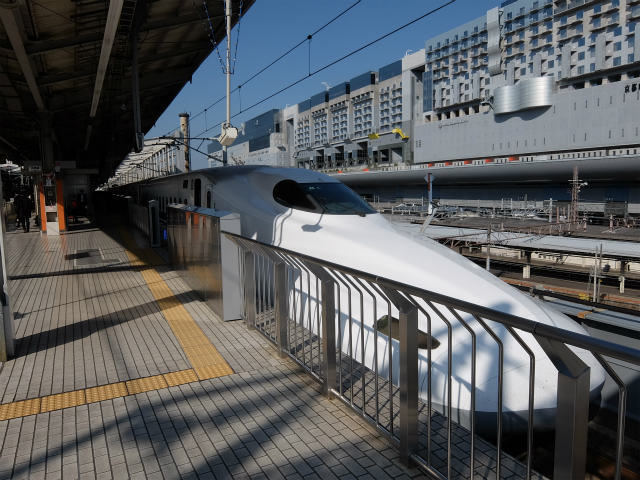
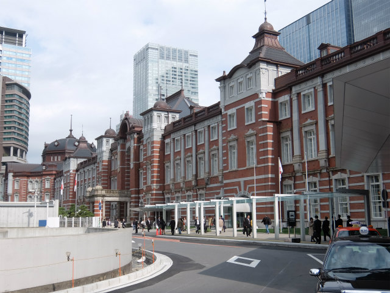
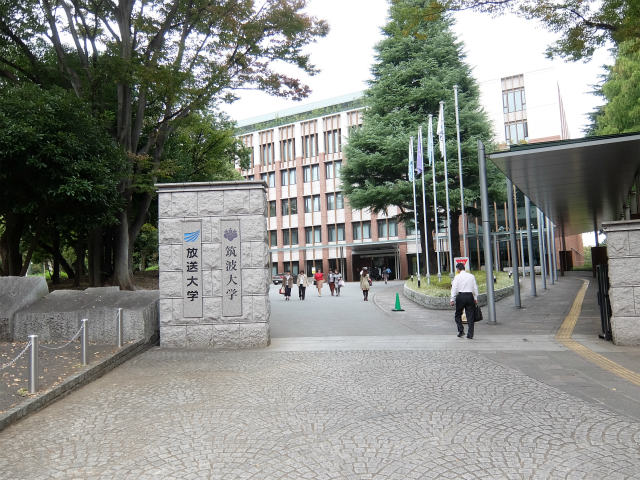
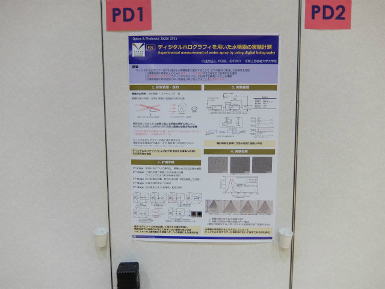
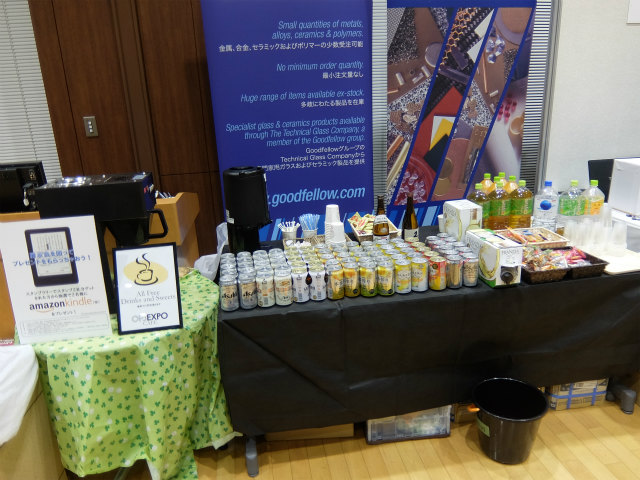
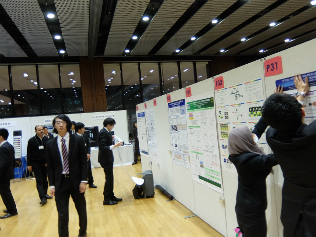
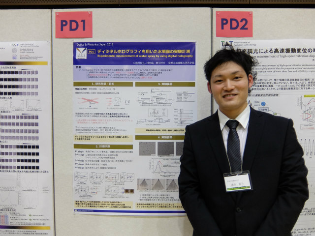
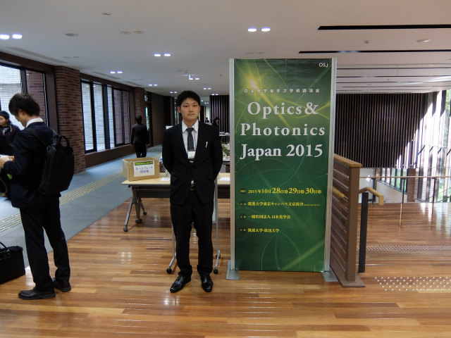

| ・ 日本光学会年次学術講演会 Optics & Photonics Japan 2015 Tokyo (H27.10.28-10.30) | |||
A井くんがOPJ2015へ，「ディジタルホログラフィを用いた水噴霧の実験計測」という題目でポスター発表にいきました．筑波大学 東京キャンパス 文京校舎って，千葉じゃ無いんですね．発表は30日だったので，中間発表後に参加です．この前の上海もひとり旅です．気が楽でいいのかもしれません． |
|||
|

京都発 |

東京着 | ||
|

放送大学併設 |

帰ったらまた廊下に吊そう | ||
|

AJKみたいに飲みながらやるスタイル |

そろそろスタート | ||
|

定番写真 |

こっちもバッチリ | ||
|
辰野金吾ですな |
|||